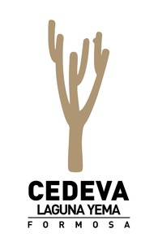
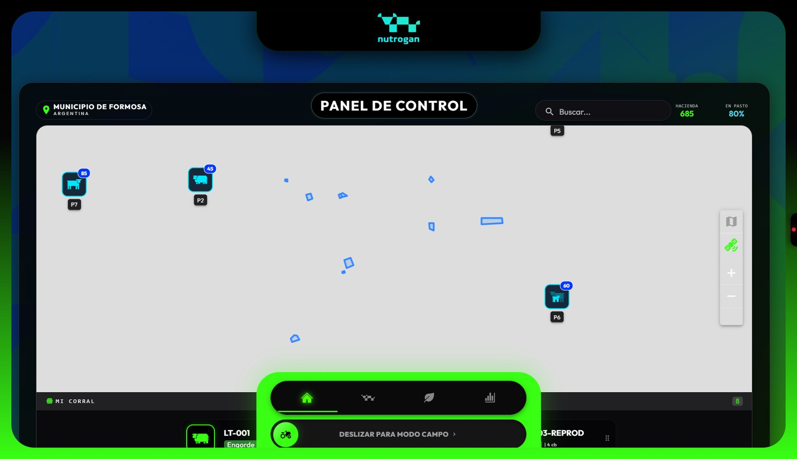
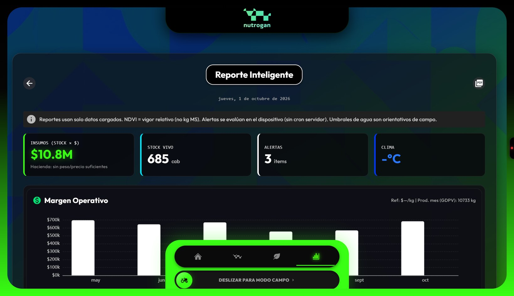
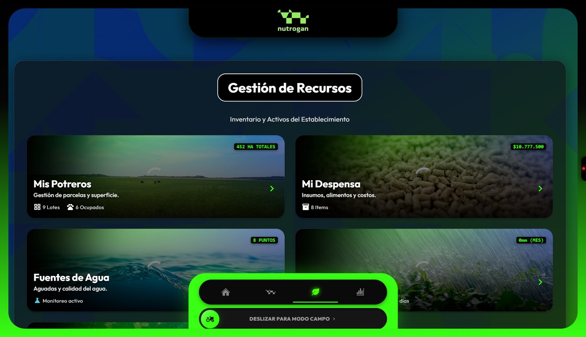
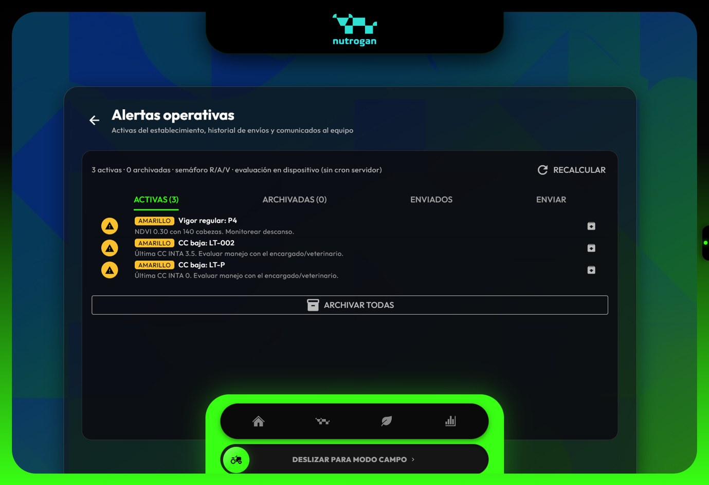
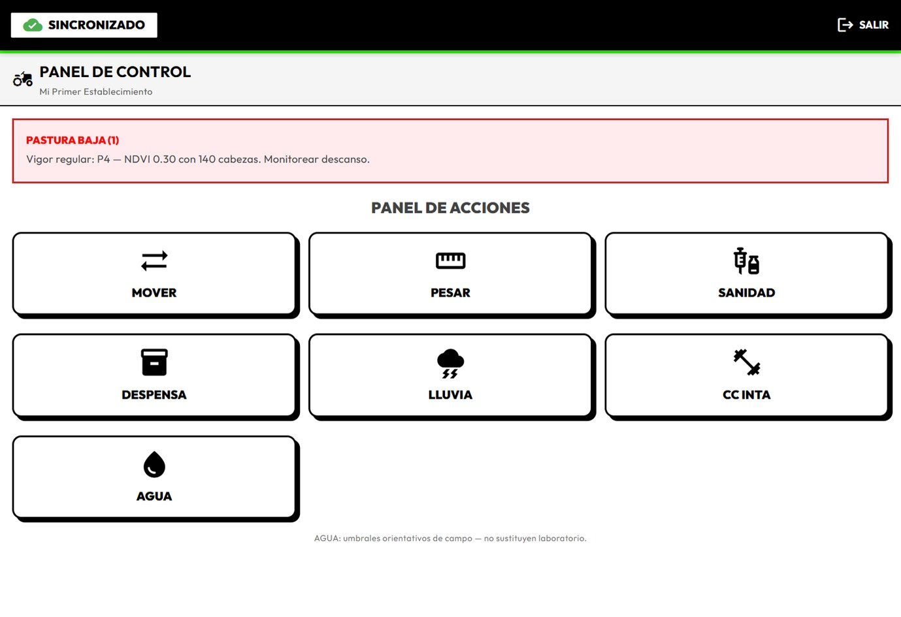

nutrogan
Plataforma integral de gestión y rentabilidad ganadera. Offline-first · GIS · Edge AI.
G.21 · TFI 2025
Quiénes lo construimos
Tec. Univ. en Programación · UTN FRRE Extensión Formosa · Egresados 2025

Fabricio N. Duarte
Legajo 29.154 · Arquitectura PWA, UX y GIS

Enzo A. Ascona
Legajo 29.134 · Postgres, RLS y negocio

Sebastián E. Amarilla
Legajo 29.132 · Docker, CI/CD y testing
Equipo
¿Por qué Nutrogan?
Del asesoramiento técnico del CEDEVA Laguna Yema nace una plataforma para salir de la gestión a ciegas.
Aislamiento digital
En el potrero no hay 4G confiable. El sistema tiene que funcionar igual.
Informalidad
Papel y ojo: sin GDPV ni historial, la decisión pierde precisión.
Fuga de valor
Sin datos de pastura, agua y costos, se erosiona la rentabilidad.
Problemática
Panel de control
Mapa satelital · carga animal · drag & drop · modo campo

Dashboard live
Reportes que deciden
Margen operativo · GDPV histórico · stock valorizado · exportación PDF

Reportes live
Recursos del establecimiento
Potreros · Despensa · Agua · Clima · Análisis satelital NDVI

Recursos live
Alertas al equipo
Semáforo · archivo · envío · comunicación del establecimiento

Alertas live
Manos enguantadas
Botones XL · alto contraste · sync visible · flujos de 1 toque

Modo campo live
Stack para el potrero
Una PWA robusta: cliente inteligente + BaaS seguro + CI/CD
Vue 3 + Quasar
PWA instalable, UI táctica, roles
Pinia + IndexedDB
Estado y cola offline durable
Supabase
Postgres, Auth, Storage, RLS, Edges
Leaflet + NDVI
GIS y vigor de pastura
TensorFlow.js
Edge AI para condición corporal
Docker + CI/CD
Vitest, Cypress, GitLab pipelines
Arquitectura
Soberanía operativa
Si solo funciona en la oficina, no es software de campo.
Operario
Registra CC, agua, pesos y movimientos sin red.
Cola local
IndexedDB con pendientes visibles y reintentos.
Nube
Sync automático a Supabase al recuperar señal.
Offline
Cómo lo llevamos adelante
Disciplina de producto profesional aplicada a un TFI con deploy real
Scrum + Jira
Épicas, backlog y entregas con valor de campo.
GitFlow
main / develop / feature · Conventional Commits.
QA + DevOps
Vitest · Cypress · Docker · pipeline de 5 etapas.
Metodología
Un TFI que corre en el campo
Problema del NEA · CEDEVA · ingeniería seria · software en producción.
UTN FRRE Extensión Formosa · Egresados 2025
MUCHAS GRACIAS
Gracias